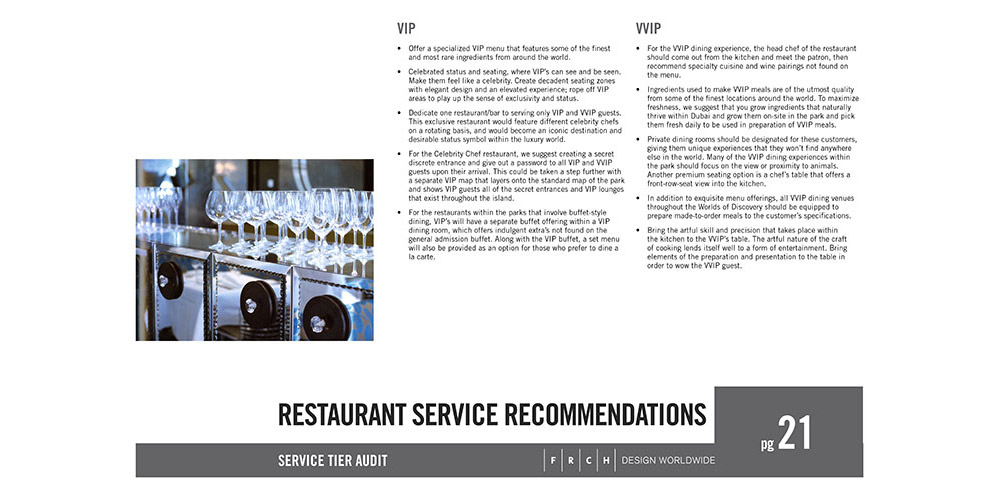

Large-scale, multi-cultural, international projects often have a higher tier guest than VIP. The document below is an outline of the VIP customer profile and how the program and project design goals need to align to those criteria.
VVIP EXPERIENCE STRATEGY


- 
REPLAY